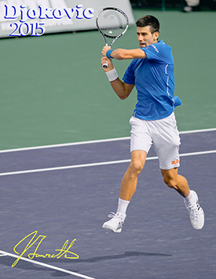

Previous: True Alignment The Two Handed Backhand | 🏠 Classic Lessons Home | Next: Understanding The Backhand Grips
Two hand backhand swing volley
Comprehensive unified tennis knowledge base — Fundamentals, Stroke Analysis, Reference Library, and more
The Two-Hand BackhandSwing Volley
Chris Lewit

The two hand backhand swing volley: now commonplace on the tour.
Over the last decade or more, the swing volley has become essential and commonplace on the pro tour and smart players are starting to include this shot at all levels, including competitive juniors and also recreational players.
In the previous article in this series, I discussed the tactics and mechanics of the swing volley focusing on the forehand. Here I will breakdown the two-handed backhand swing volley, and next month the one-handed backhand swing volley.
Building The Backhand
Here's how I build this shot - my priorities and the reminders that I give to my students. The key point is that footwork and positioning are everything
Typically on a swing volley, the ball is floating and the player has a lot of time to adjust the feet into position. Players need to adjust well and position the body with a stable base of support in the legs. A strong, wide, stable base will create the balance to hit the swing volley well.
On the two-handed backhand, the stable base is usually in a closed to neutral stance. Players often are moving forward to attack the ball out of the air, so a step down into the shot with the front foot makes sense.
An open stance with a leaping front foot transfer is another option when moving to floating balls nearer the sideline. I try to teach these two footwork setups to my students so that they have all the tools that they need to handle floaters out of the air.
I teach my students to position with a stable base and a neutral or closed stance.
Topspin
Whipped wrists and forearms are essential to developing spin and control. This makes the swing backhand volley steady and consistent. Too many players try to kill the ball out of the air and hit it too flat and strong. They catch the net or the ball flies out.
Whipping the racquet head through the impact creates brush that is essential to the safety of the shot. Players can't be stiff or tense with their forearms and wrists or the shot often catches the net - a very common mistake on swinging volley attacks.
I believe kids often think they need to go too big - too aggressive - and thus often lose the topspin and shape on the ball. Players should get under the ball, whip upward and shape it so as to provide good net clearance.
If I had a dollar for every swing volley hit in the net, I would be a millionaire. There is something about moving forward and attacking the ball out of the air - maybe the psychological pressure or expectation - that causes a lot of net errors.
Whipping the racket head to brush the ball creates control.
I tell my students that their decision to move forward and take time away by hitting the ball in the air from the midcourt is already de facto aggressive. They don't need to go too big. Just good acceleration, topspin and placement.
They are in command of the point and don't want to give away an error from this strong position. The best players spin and control the swing volley. You win with courage and taking time, not sheer velocity.
Contact Point
Ideally the swinging volley should be struck between the hip and shoulder, just like other groundstrokes. Players need to understand this simple contact point management mantra. No swing volleys above the head or below the knees, if those contact points can be avoided.
Although I say to try and receive the ball between the hip and shoulders, I teach my students that they should not fear low swinging volleys. I want them to have the courage and aggressive mindset of Agassi - to have no fear taking balls out of the air at any height, if necessary. They should try and hit the able between hip and shoulder, but fear nothing.
The ideal contact is between the hip and shoulder.
Again, if the whip and topspin is good, low swing volleys are actually not that risky. In fact, a good whipping topspin volley could be safer than a traditional slice volley. Players should stay low and stable on lower height balls.
Jumping Variations
On medium to high balls, I always teach a few jumping two handed backhand techniques to my players.
First, a simple "front foot hop" or "front foot attack", as the great footwork expert David Bailey would say, is my go-to technique on the double handed backhand that I teach first to my students. Players step down into the shot with the front foot and explode up and in, landing on the front foot, with a back leg kickback.
It's important to leave extra spacing because the body will be exploding forward to the ball. Players need to be taught to leave more distance than a normal backhand to accommodate the forward leap. It's critical to position well to allow space to get good extension and acceleration during the jumping phase of the backhand.
The front foot attack: step into shot, upward explosion, front foot landing, back leg kick back.
Another variation of jumping that I mentioned previously is the open stance to forward transfer. I like to teach this move as a secondary option to the standard front foot attack.
The player loads up in a semi-open to open stance and then makes a forward diagonal jump to the ball, finishing with a left leg back kick. This is a nice variation that player use typically when moving laterally and forward towards the sideline of the court.
It's also a common jumping backhand technique on the return of serve. In fact, all of these three jumping techniques are found on the return of serve, especially to receive high kicking balls.
Another jumping variation: semi-open stance and forward diagonal jump.
The Razzle Dazzle or the knee up jump is the third jumping variation. This is a highlight reel backhand shot that I love to teach. It's popular on Tour and a crowd pleaser, although it takes more timing and coordination than the first two techniques. I teach it to my advanced players.
After establishing a wide and stable base in the legs with a neutral to closed stance, players actually lift up their back knee and jump off their front leg only. Players often find this challenging to coordinate at first.
The raised knee and leg act as a midair anchor as the upper body rotates during racquet acceleration. It's not really essential but I like to teach it to my students for their style, and also to challenge their coordination.
Tactical Considerations
Players need to command the midcourt to take the ball out of the air. They need to move forward quickly to get in position, take time away, and attack. Swing volleys can be made successfully from anywhere on the court, but the typical situation is a quick move forward to attack. This movement needs to be trained and the aggressive mindset encouraged and honed. Many times players hesitant to take the risk of hitting the volley out of the air.
Players also need to understand when their opponent is likely to play a high defensive ball or a floater. If a player can anticipate a high shot to attack out of the air, he or she will move with greater quickness to the ball.
When you are taking the ball out of the air, command the midcourt.
Transitioning To Net
It's generally a good idea to take the swing volley and plan a transition to the net. That's a very common and good approach tactic. However, sometimes a player will just take command out of the air and stay in the midcourt looking to finish with another swing volley if the ball comes back. I accept this strategy too.
A shorter angle swing volley cross court is an awesome shot and I try to practice this one with my students. It's important that players understand the power of the crosscourt attack but also the danger. When attacking cross, it's essential that the player cover the open court down the line.
Another common pattern is to hit an attack swinging volley down the line, cover the line, and be ready to react to any cross court play. The down the line topspin volley is really effective because if the balls "runs" with spin, it can be difficult for the opponent to control or redirect cross.
The effect on the ball often causes a late contact point which bodes well for the players covering the line. Therefore, I like to teach both these basic strategic concepts to my students.
A deadly combination: a swing volley and a traditional angle volley or drop shot.
Underspin Volley Finish
Another important strategic concept is for my players to attack out of the air with power topspin, but then look to change pace and spin on the next shot with a backspin dropshot volley or angle volley. This is a deadly combination. Attack strong with topspin deep but look to finish with a soft, backspin angle or drop volley. The perfect combination play.
Conclusion
Go practice those topspin two handed backhand volleys with no fear or hesitation. I am looking forward to discussing the beautiful and elegant swinging one-handed backhand volley next time. Vamos!

Chris Lewit, former #1 for Cornell and Pro Circuit player, has coached numerous top 10 nationally ranked juniors and is a leading coach, educator, and author. He has written two best-selling books, The Secrets of Spanish Tennis and The Tennis Technique Bible.
Chris runs a popular high performance summer tennis camp in the beautiful mountains of Vermont and coaches players world-wide through his virtual school, CLTA Online (CLTA.teachable.com).
Chris also produces a weekly high performance tennis video talk show and podcast, The Prodigy Maker Show, which is available on Apple Podcasts and all other podcasting directories. All shows can be accessed at ProdigyMaker.com.
Check out Chris's blog, also at ProdigyMaker.com for free articles on high performance junior development and Spanish training. Learn about his camp at ChrisLewit.com or visit the online academy at CLTA.teachable.com

The Secrets of Spanish Tennis
What makes Spanish tennis so unique and successful? What exactly are those Spanish coaches doing so differently to develop superstars like Rafael Nadal and David Ferrer that other systems are not doing? These and other questions are answered in The Secrets of Spanish Tennis, the culmination of five years of study on the Spanish way of training by USTA High Performance Coach Chris Lewit.
Click Here to Order!
Source: tennisplayer.net archive — Two Hand Backhand Swing Volley.docx (John Yandell teaching library, 2002-2022). Extracted and rendered as HTML for Tennis Future Lab.